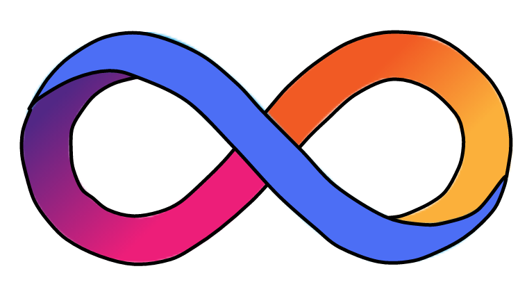

互联网计算机漫游指南
如果你只听说过 IC ，但一直忙于以太坊、波卡的项目，没有详细了解过 IC ，那你算来对地方了！
如果你还不了解 区块链、比特币、IC ，没关系，从这里开始。听我向你娓娓道来加密发展史，火速入门 Web3 开发！

《互联网计算机漫游指南》的结构：前半部分生动有趣，后半部分言简意赅；前半部分谈 IC 原理，后半部分论开发实战。
为什么写这本书？
最初我了解 IC 后，收集整理了 IC 白皮书、Medium 、ICPL 论坛、IC Developer Forum 里的资料。给朋友讲了 IC 的架构以后，还跟她说正在整理关于 IC 资料的笔记，整理好就分享出来，没想到这一整理就是一年。在经历了天荒地老、沧海桑田、时过境迁的漫长岁月（拖延）后，加上自己后来学到的东西，终于凑出了笔记的初代版本。又经过一段时间的深入学习，我觉得把这些笔记分享出来比较好。做成一本开源书帮大家学习 IC 。也是为 IC 开发者社区做一点贡献。
零门槛学习区块链，抹平学习 IC 门槛。

为什么开源？
我很喜欢 Rust 开源社区，Rust 社区里有很多开源书、开源优质项目，给了我很大帮助。我从 Rust 开源社区学到了很多东西。像比特币、以太坊以及相关的项目也都有浓厚的开源氛围，我希望 IC 社区也涌现出越来越多的开源项目。供大家互相学习。
另外，IC 的内容更新迭代很快，开源大家一起贡献，内容保持新鲜不过时。
加入本书的开发者讨论群，勘误、修改、提出建议、共同为开源书贡献力量！
OpenChat, Telegram, Discord, Github